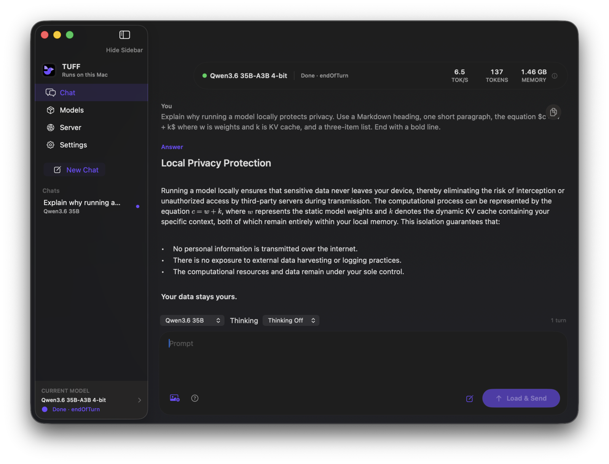

Turbo Ultimate Field Fare is a macOS app that lets you run models like Qwen, Gemma, and GPT-OSS with expert streaming, so large models run on devices without a lot of memory.

Mixture-of-experts weights stream from SSD through a bounded cache, so a 61 GiB checkpoint runs on a 16 GB machine without swap.
Gemma 4 E4B and 26B-A4B, Qwen3.6 35B-A3B, and GPT-OSS 20B and 120B, each downloaded and repacked from a pinned revision.
Inference is local. The optional OpenAI-compatible server binds only to
127.0.0.1.
Swift and Metal throughout. It does not wrap MLX or llama.cpp.